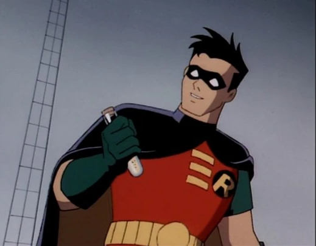

Nightwing
As Dick Grayson grew up he later wanted to shed the Robin costume and become his own identity and self. He then became Nightwing, a vigilante who fought crime and sometimes worked along with the Batman on special missions.

Robin is known to be Batman's first and only sidekick. He started working with Bruce Wayne when he became a little older and wanted to go on missions with Batman after he found his secret lair, the Batcave. Robin posseses many great skills such as his detective work and fighting moves as he was trained by Bruce Wayne himself.
Dick Grayson, or Robin, was introduced to Bruce Wayne when Bruce attended a circus and saw the flying Graysons. Robin's family was an aerial acrobatic team and would frequently travel the world performing shows. It was at a show that Bruce attended that Dick's family was tragically murdered and Bruce adopted Dick as a result of him now being alone. Together they became the dynamic duo.
As Dick Grayson grew up he later wanted to shed the Robin costume and become his own identity and self. He then became Nightwing, a vigilante who fought crime and sometimes worked along with the Batman on special missions.